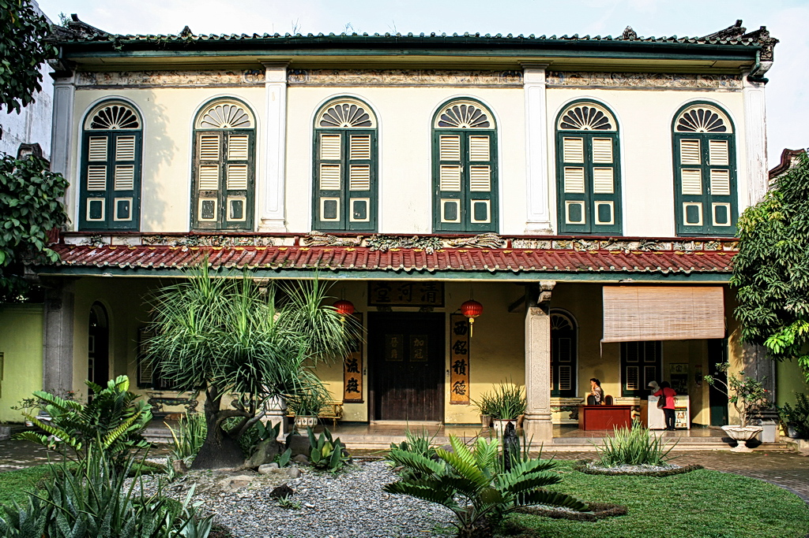
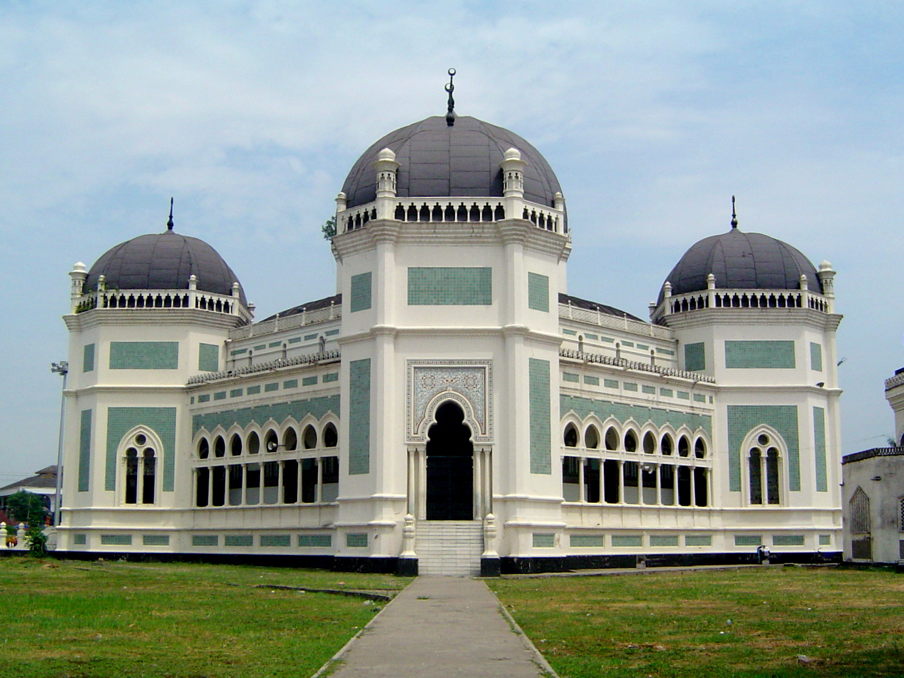

ISTANA MAIMUN
bisa dibilang merupakan tempat wisata terpopuler di dalam area Kota Medan. Merupakan istana Kesultanan Deli dan menjadi ikon Kota Medan, istana ini didesain oleh arsitek dari tentara Kerajaan Belanda untuk Sultan Deli. Arsitekturnya inilah yang membuat istana ini unik dan begitu populer - desain interiornya memadukan unsur-unsur Melayu, Islam, Spanyol, India, Belanda, dan bahkan Italia.
Sekarang, Istana Maimun telah berubah menjadi sebuah museum dan salah satu tempat wisata di Medan yang populer.
Museum Tjong A Fie Mansion

adalah sebuah mansion di Kota Medan yang dibangun oleh Tjong A Fie, seorang pedagang sukses di kota Medan pada akhir abad 19 hingga awal abad 20 dan menjadi salah satu tokoh paling berpengaruh di kota ini. Mansion ini sekarang telah disulap menjadi sebuah museum, dan kamu pun bisa datang dan mengagumi bangunannya yang bergaya Art Deco dengan kombinasi pengaruh budaya China dan Eropa.
Konon, arsitekturnya dipengaruhi oleh Cheong Fatt Tze Mansion yang tersohor di Penang , yang pernah muncul di salah satu adegan klimaks di film Crazy Rich Asians
Masjid Raya Almashun

Masjid Raya Medan atau Masjid Raya Almashun adalah sebuah masjid besar di Kota Medan. Masjid ini dibangun di masa Kesultanan Deli, dengan gaya arsitektur perpaduan Maroko, Spanyol, dan Melayu. Bentuknya pun unik seperti segi delapan, membentuk bagian dalam yang berbeda dibandingkan masjid lain pada umumnya.
Kabarnya, luas Masjid Raya Medan ini mencapai 5 ribu meter persegi dan mampu menampung hingga 2.000 jamaah!